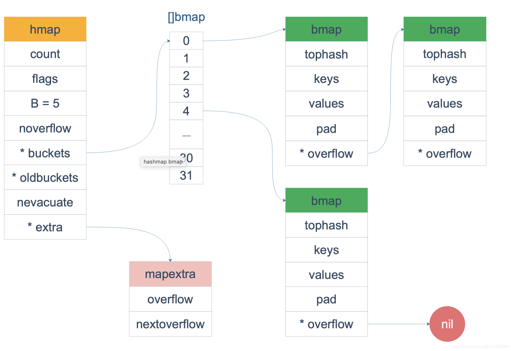
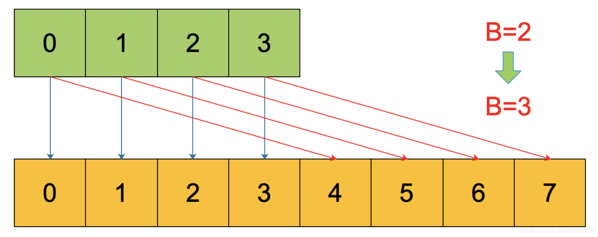
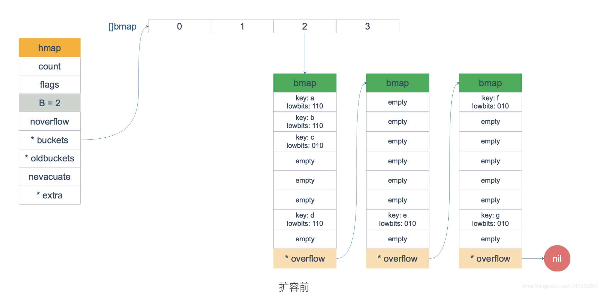
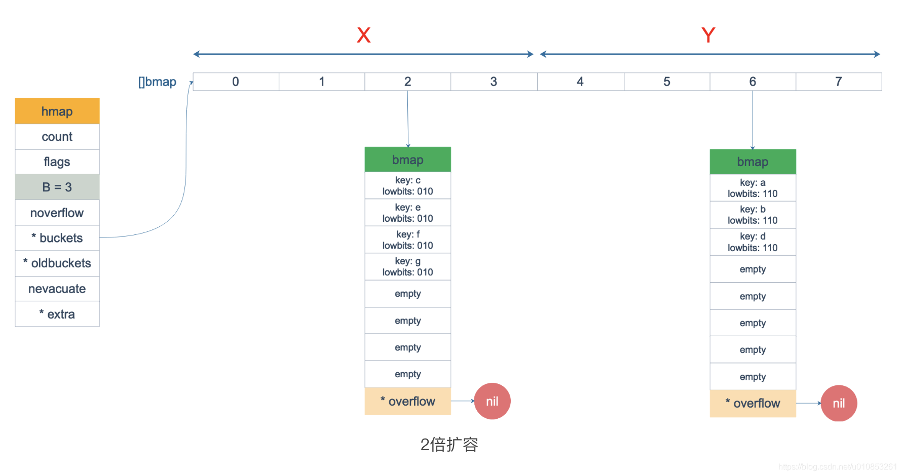
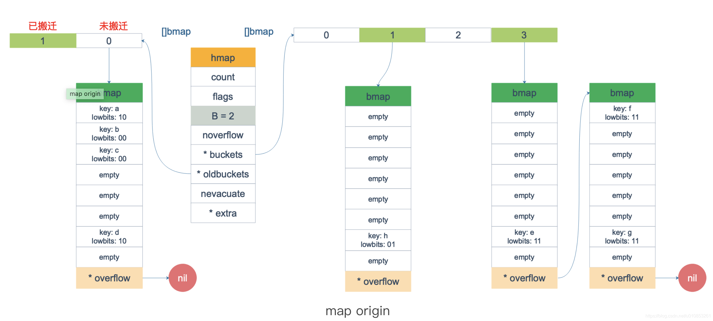
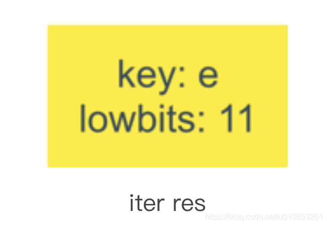

map底层原理
map简介
map是什么？
map是一堆键值对的未排序集合，类似Python中字典的概念，它的格式为map[keyType]valueType，是一个key-value的hash结构。map的读取和设置也类似slice一样，通过key来操作，只是slice的index只能是int类型，而map多了很多类型，可以是int，可以是string及所有完全定义了==与!=操作的类型。
在C++/Java中，map一般都以库的方式提供，比如在C++中是STL的std::map<>，在Java中是Hashmap<>，在这些语言中，如果要使用map，事先要引用相应的库。而在Go中，使用map不需要引入任何库，并且用起来也更加方便。
map声明
var 变量名 map[int]string // 声明一个key为int类型，值为string类型的map变量，未分配空间
map初始化
test1 := map[int]string {1:"zhang san", 2:"li si", 3:"wang wu"} // 直接初始化
test2 := make(map[int] string) // 通过make初始化
test3 := make(map[int] string, 10) // 通过make初始化，并指定map容量
make函数实际上会被编译器定位到调用 runtime.makemap()，主要做的工作就是初始化 hmap 结构体的各种字段，例如计算 B 的大小，设置哈希种子 hash0 等等。
源码位于go/src/runtime/map.go中
// 这里的hint就是我们 make 时候后面指定的初始化长度.
func makemap(t *maptype, hint int, h *hmap) *hmap {
{
//......
}
// 找到一个 B，使得 map 的装载因子在正常范围内。
B := uint8(0)
for overLoadFactor(hint, B) {
B++
}
h.B = B
// 初始化 hash table
// 如果 B 等于 0，那么 buckets 就会在赋值的时候再分配
if h.B != 0 {
var nextOverflow *bmap
h.buckets, nextOverflow = makeBucketArray(t, h.B, nil)
if nextOverflow != nil {
h.extra = new(mapextra)
h.extra.nextOverflow = nextOverflow
}
}
// 返回的h是*hmap指针(slice返回的是结构体对象)
return h
}
map的实现原理
goalng的map底层原理实际上就是实现散列表(哈希表)，并使用拉链法解决hash冲突。但是go语言解决hash冲突主要还是依赖数组而不是链表。设计中采用分桶(Bucket)，每个桶里面存放多个key-value的思路进行性能优化。
map数据结构
map的数据结构是两个核心的结构体hmap与bmap，bmap里有两个数组分别用于存放key和value。
hmap的定义如下：
源码位于go/src/runtime/map.go中
// A header for a Go map.
type hmap struct {
count int //map 中的元素个数，必须放在 struct 的第一个位置，因为内置的 len 函数会通过unsafe.Pointer会从这里读取。
flags uint8 // 状态标志
B uint8 // 可以最多容纳 6.5 * 2 ^ B 个元素，6.5为装载因子
noverflow uint16 // 溢出的个数
hash0 uint32 // 哈希种子
buckets unsafe.Pointer // 桶的地址，如果 count == 0 的话，可能是 nil
oldbuckets unsafe.Pointer // 旧桶的地址，用于扩容
nevacuate uintptr // 搬迁进度，小于nevacuate的已经搬迁 have been evacuated)
extra *mapextra // optional fields
}
bmap 就是我们常说的“bucket”结构，每个 bucket 里面最多存储 8 个 key，这些 key 之所以会落入同一个桶，是因为它们经过哈希计算后，哈希结果是“一类”的。在桶内，又会根据 key 计算出来的 hash 值的高 8 位来决定 key 到底落入桶内的哪个位置（一个桶内最多有8个位置）。
// A bucket for a Go map.
type bmap struct {
// 每个元素hash值的高8位，如果tophash[0] < minTopHash，表示这个桶的搬迁状态
tophash [bucketCnt]uint8
// 接下来是8个key、8个value，但是我们不能直接看到；为了优化对齐，go采用了key放在一起，value放在一起的存储方式，
// 再接下来是hash冲突发生时，下一个溢出桶的地址
}
上面这个数据结构并不是 golang runtime 时的结构，在编译时候编译器会给它动态创建一个新的结构，如下：
type bmap struct {
topbits [8]uint8 // 每个元素hash值的高8位
keys [8]keytype // 存放key的数组
values [8]valuetype // 存放value的数组
pad uintptr // 为了内存对齐的补充字段，无实际作用
overflow uintptr // 溢出桶的地址
}
当 map 的 key 和 value 都不是指针，并且 size 都小于 128 字节的情况下，会把 bmap 标记为不含指针，这样可以避免 gc 时扫描整个 hmap。但是，我们看 bmap 其实有一个 overflow 的字段，是指针类型的，破坏了 bmap 不含指针的设想，这时会把 overflow 移动到 extra 字段来。
// mapextra holds fields that are not present on all maps.
type mapextra struct {
// If both key and elem do not contain pointers and are inline, then we mark bucket
// type as containing no pointers. This avoids scanning such maps.
// However, bmap.overflow is a pointer. In order to keep overflow buckets
// alive, we store pointers to all overflow buckets in hmap.extra.overflow and hmap.extra.oldoverflow.
// overflow and oldoverflow are only used if key and elem do not contain pointers.
// overflow contains overflow buckets for hmap.buckets.
// oldoverflow contains overflow buckets for hmap.oldbuckets.
// The indirection allows to store a pointer to the slice in hiter.
overflow *[]*bmap
oldoverflow *[]*bmap
// nextOverflow holds a pointer to a free overflow bucket.
nextOverflow *bmap
}
map内存模型

bmap 是存放 k-v 的地方，bmap的存储分布如下：
这里可以看到bmap(bucket)的kv分布分开的，没有按照常规的kv/kv/kv…这种方式存储。源码里说这样的好处是在某些情况下可以省略掉 pad 字段，节省内存空间。
每个 bucket 设计成最多只能放 8 个 key-value 对，如果有第 9 个 key-value 落入当前的 bucket，那就需要再构建一个 bucket ，通过 overflow 指针连接起来。
key定位与hash碰撞
对于map来说，如何通过key定位到实际的value，是性能与体验的关键指标。
在golang的map中，key经过hash计算后得到哈希值，哈希值是 64 个 bit 位（针对64位机）。根据hash值的最后B个bit位来确定这个key落在哪个桶。 如果 B = 5，那么桶的数量，也就是 buckets 数组的长度是 2^5 = 32。
比如说，现在有一个key经过哈希函数计算后，得到如下的哈希结果：
10010111 | 000011110110110010001111001010100010010110010101010 │ 01010
用最后的 5 个 bit 位，也就是 01010，值为 10，也就是 10 号桶。这个操作实际上就是取余操作，但是取余开销太大，所以代码实现上用的位操作代替。再用哈希值的高 8 位，找到此 key 在 bucket 中的位置，这是在寻找已有的 key。最开始桶内还没有 key，新加入的 key 会找到第一个空位放入。
buckets 编号就是桶编号，当两个不同的 key 落在同一个桶中，也就是发生了哈希冲突。冲突的解决手段是用拉链法(链表法)：在 bucket 中，从前往后找到第一个空位。这样，在查找某个 key 时，先找到对应的桶，再去遍历 bucket 中的 key。
检索原理如下：
上图中，假定 B = 5，所以 bucket 总数就是 2^5 = 32。首先计算出待查找 key 的哈希，使用低 5 位 00110，找到对应的 6 号 bucket，使用高 8 位 10010111，对应十进制 151，在 6 号 bucket 中 遍历bucket 寻找 tophash 值（HOB hash）为 151 的 key，找到了 2 号槽位，这样整个查找过程就结束了。
如果在 bucket 中没找到，并且 overflow 不为空，还要继续去 overflow bucket 中寻找，直到找到或是所有的 key 槽位都找遍了，包括所有的 overflow bucket(这里需要遍历bucket数组中某个槽位的bucket链表的所有bucket)。
源码位于go/src/runtime/map.go中
// mapaccess1 returns a pointer to h[key]. Never returns nil, instead
// it will return a reference to the zero object for the elem type if
// the key is not in the map.
func mapaccess1(t *maptype, h *hmap, key unsafe.Pointer) unsafe.Pointer {
//......校验逻辑
//如果 h 什么都没有，返回value类型的零值
if h == nil || h.count == 0 {
if t.hashMightPanic() {
t.key.alg.hash(key, 0) // see issue 23734
}
return unsafe.Pointer(&zeroVal[0])
}
// 并发写冲突
if h.flags&hashWriting != 0 {
throw("concurrent map read and map write")
}
// 不同类型 key 使用的 hash 算法在编译期确定
alg := t.key.alg
hash := alg.hash(key, uintptr(h.hash0))
// 求低 B 位的掩码.
// 比如 B=5，那 m 就是31，低五位二进制是全1
m := bucketMask(h.B)
// b 就是 当前key对应的 bucket 的地址
b := (*bmap)(add(h.buckets, (hash&m)*uintptr(t.bucketsize)))
// oldbuckets 不为 nil，说明发生了扩容
if c := h.oldbuckets; c != nil {
if !h.sameSizeGrow() {
// There used to be half as many buckets; mask down one more power of two.
m >>= 1
}
// 求出 key 在老的 map 中的 bucket 位置
oldb := (*bmap)(add(c, (hash&m)*uintptr(t.bucketsize)))
// 如果 oldb 没有搬迁到新的 bucket
// 那就在老的 bucket 中寻找
if !evacuated(oldb) {
b = oldb
}
}
// 计算出高 8 位的 hash
// 相当于右移 56 位，只取高8位
top := tophash(hash)
// 这里进入bucket的二层循环找到对应的kv(第一层是bucket,第二层是bucket内部的8个slot)
bucketloop:
// 遍历bucket以及overflow链表
for ; b != nil; b = b.overflow(t) {
//遍历bucket的8个slot
for i := uintptr(0); i < bucketCnt; i++ {
// tophash 不匹配
if b.tophash[i] != top {
// 标识当前bucket剩下的slot都是empty
if b.tophash[i] == emptyRest {
break bucketloop
}
continue
}
// 获取bucket的key
k := add(unsafe.Pointer(b), dataOffset+i*uintptr(t.keysize))
if t.indirectkey() {
k = *((*unsafe.Pointer)(k))
}
if alg.equal(key, k) {
//定位到 value 的位置
e := add(unsafe.Pointer(b), dataOffset+bucketCnt*uintptr(t.keysize)+i*uintptr(t.elemsize))
// value 解引用
if t.indirectelem() {
e = *((*unsafe.Pointer)(e))
}
return e
}
}
}
// overflow bucket 也找完了，说明没有目标 key
// 返回零值
return unsafe.Pointer(&zeroVal[0])
}
函数返回 h[key] 的指针，如果 h 中没有此 key，那就会返回一个 key 相应类型的零值，不会返回 nil。
定位 key 和 value 的方法：
// key 定位公式
k := add(unsafe.Pointer(b), dataOffset+i*uintptr(t.keysize))
// value 定位公式
v := add(unsafe.Pointer(b), dataOffset+bucketCnt*uintptr(t.keysize)+i*uintptr(t.valuesize))
b 是 bmap 的地址，dataOffset 是 key 相对于 bmap 起始地址的偏移。
因此 bucket 里 key 的起始地址就是 unsafe.Pointer(b)+dataOffset。第 i 个 key 的地址就要在此基础上跨过 i 个 key 的大小；而我们又知道，value 的地址是在所有 key 之后，因此第 i 个 value 的地址还需要加上所有 key 的偏移。
当定位到一个具体的 bucket 时，里层循环就是遍历这个 bucket 里所有的 cell，或者说所有的槽位，也就是 bucketCnt=8 个槽位。
整个循环过程：
再说一下 minTopHash，当一个 cell 的 tophash 值小于 minTopHash 时，标志这个 cell 的迁移状态。因为这个状态值是放在 tophash 数组里，为了和正常的哈希值区分开，会给 key 计算出来的哈希值一个增量：minTopHash。这样就能区分正常的 top hash 值和表示状态的哈希值。
下面的这几种状态就表征了 bucket 的情况：
emptyRest = 0 // this cell is empty, and there are no more non-empty cells at higher indexes or overflows.
emptyOne = 1 // this cell is empty
// 扩容相关
evacuatedX = 2 // key/elem is valid. Entry has been evacuated to first half of larger table.
// 扩容相关
evacuatedY = 3 // same as above, but evacuated to second half of larger table.
evacuatedEmpty = 4 // cell is empty, bucket is evacuated.
minTopHash = 5 // minimum tophash for a normal filled cell.
源码里判断这个 bucket 是否已经搬迁完毕，用到的函数：
func evacuated(b *bmap) bool {
h := b.tophash[0]
return h > emptyOne && h < minTopHash
}
只取了 tophash 数组的第一个值，判断它是否在 1-5 之间。对比上面的常量，当 top hash 是 evacuatedEmpty、evacuatedX、evacuatedY 这三个值之一，说明此 bucket 中的 key 全部被搬迁到了新 bucket。
map扩容原理
使用 key 的 hash 值可以快速定位到目标 key，然而，随着向 map 中添加的 key 越来越多，key 发生碰撞的概率也越来越大。bucket 中的 8 个 cell 会被逐渐塞满，查找、插入、删除 key 的效率也会越来越低。最理想的情况是一个 bucket 只装一个 key，这样，就能达到 O(1) 的效率，但这样空间消耗太大，用空间换时间的代价太高。
Go 语言采用一个 bucket 里装载 8 个 key，定位到某个 bucket 后，还需要再定位到具体的 key，这实际上又用了时间换空间。当然，这样做，要有一个度，不然所有的 key 都落在了同一个 bucket 里，直接退化成了链表，各种操作的效率直接降为 O(n)，是不行的。
因此，需要有一个指标来衡量前面描述的情况，这就是装载因子。
Go 源码里这样定义装载因子：
loadFactor := count / (2^B) // count 就是 map 的元素个数，2^B 表示 bucket 数量。
再来说触发 map 扩容的条件，在向 map 插入新 key 的时候，会进行条件检测。
符合下面这 2 个条件，就会触发扩容。
- 载因子超过阈值，源码里定义的阈值是 6.5。
- overflow 的 bucket 数量过多，这有两种情况：
(1) 当 B 大于15时，也就是 bucket 总数大于 2^15 时，如果overflow的bucket数量大于2^15，就触发扩容。
(2)当B小于15时，如果overflow的bucket数量大于2^B 也会触发扩容。
通过汇编语言可以找到赋值操作对应源码中的函数是 mapassign，对应扩容条件的源码如下： 源码位于go/src/runtime/map.go中
// 触发扩容时机
if !h.growing() && (overLoadFactor(h.count+1, h.B) || tooManyOverflowBuckets(h.noverflow, h.B)) {
hashGrow(t, h)
goto again // Growing the table invalidates everything, so try again
}
// overLoadFactor reports whether count items placed in 1<<B buckets is over loadFactor.
// 装载因子超过 6.5
func overLoadFactor(count int, B uint8) bool {
return count > bucketCnt && uintptr(count) > loadFactorNum*(bucketShift(B)/loadFactorDen)
}
// tooManyOverflowBuckets reports whether noverflow buckets is too many for a map with 1<<B buckets.
// Note that most of these overflow buckets must be in sparse use;
// if use was dense, then we'd have already triggered regular map growth.
func tooManyOverflowBuckets(noverflow uint16, B uint8) bool {
// If the threshold is too low, we do extraneous work.
// If the threshold is too high, maps that grow and shrink can hold on to lots of unused memory.
// "too many" means (approximately) as many overflow buckets as regular buckets.
// See incrnoverflow for more details.
if B > 15 {
B = 15
}
// The compiler doesn't see here that B < 16; mask B to generate shorter shift code.
// overflow buckets 太多
return noverflow >= uint16(1)<<(B&15)
}
第 1 点：我们知道，每个 bucket 有 8 个空位，在没有溢出，且所有的桶都装满了的情况下，装载因子算出来的结果是 8。因此当装载因子超过 6.5 时，表明很多 bucket 都快要装满了，查找效率和插入效率都变低了。在这个时候进行扩容是有必要的。
第 2 点：是对第 1 点的补充。就是说在装载因子比较小的情况下，这时候 map 的查找和插入效率也很低，而第 1 点识别不出来这种情况。表面现象就是计算装载因子的分子比较小，即 map 里元素总数少，但是 bucket 数量多（真实分配的 bucket 数量多，包括大量的 overflow bucket）。
不难想像造成这种情况的原因：不停地插入、删除元素。先插入很多元素，导致创建了很多 bucket，但是装载因子达不到第 1 点的临界值，未触发扩容来缓解这种情况。之后，删除元素降低元素总数量，再插入很多元素，导致创建很多的 overflow bucket，但就是不会触犯第 1 点的规定，你能拿我怎么办？overflow bucket 数量太多，导致 key 会很分散，查找插入效率低得吓人， 因此出台第 2 点规定。这就像是一座空城，房子很多，但是住户很少，都分散了，找起人来很困难。
对于命中条件 1，2 的限制，都会发生扩容。
但是扩容的策略并不相同，毕竟两种条件应对的场景不同。
对于条件 1，元素太多，而 bucket 数量太少，很简单：将 B 加 1，bucket 最大数量 (2^B) 直接变成原来 bucket 数量的 2 倍。于是，就有新老 bucket 了。注意，这时候元素都在老 bucket 里，还没迁移到新的 bucket 来。而且，新 bucket 只是最大数量变为原来最大数量（2^B）的 2 倍（2^B * 2）。
对于条件 2，其实元素没那么多，但是 overflow bucket 数特别多，说明很多 bucket 都没装满。解决办法就是开辟一个新 bucket 空间，将老 bucket 中的元素移动到新 bucket，使得同一个 bucket 中的 key 排列地更紧密。这样，原来，在 overflow bucket 中的 key 可以移动到 bucket 中来。结果是节省空间，提高 bucket 利用率，map 的查找和插入效率自然就会提升。
对于条件 2 的解决方案，有一个极端的情况：如果插入 map 的 key 哈希都一样，就会落到同一个 bucket 里，超过 8 个就会产生 overflow bucket，结果也会造成 overflow bucket 数过多。移动元素其实解决不了问题，因为这时整个哈希表已经退化成了一个链表，操作效率变成了 O(n)。
前面说了扩容的条件，下面看一下扩容到底是怎么做的：由于 map 扩容需要将原有的 key/value 重新搬迁到新的内存地址，如果有大量的 key/value 需要搬迁，在搬迁过程中map会阻塞，非常影响性能。因此 Go map 的扩容采取了一种称为 “渐进式” 的方式，原有的 key 并不会一次性搬迁完毕，每次最多只会搬迁 2 个bucket。
上面说的 hashGrow() 函数实际上并没有真正地“搬迁”，它只是分配好了新的 buckets，并将老的 buckets 挂到了新的map的 oldbuckets 字段上。真正搬迁 buckets 的动作在 growWork() 函数中，而调用 growWork() 函数的动作是在 mapassign 和 mapdelete 函数中。也就是插入或修改、删除 key 的时候，都会尝试进行搬迁 buckets 的工作。先检查 oldbuckets 是否搬迁完毕，具体来说就是检查 oldbuckets 是否为 nil。
先看 hashGrow() 函数所做的工作，再来看具体的搬迁 buckets 是如何进行的。
func hashGrow(t *maptype, h *hmap) {
// B+1 相当于是原来 2 倍的空间
bigger := uint8(1)
// 对应于等容扩容
if !overLoadFactor(h.count+1, h.B) {
// 进行等量的内存扩容，所以 B 不变
bigger = 0
h.flags |= sameSizeGrow
}
oldbuckets := h.buckets
// 申请新的 buckets 空间
newbuckets, nextOverflow := makeBucketArray(t, h.B+bigger, nil)
flags := h.flags &^ (iterator | oldIterator)
if h.flags&iterator != 0 {
flags |= oldIterator
}
// commit the grow (atomic wrt gc)
h.B += bigger
h.flags = flags
h.oldbuckets = oldbuckets
h.buckets = newbuckets
// 当前搬迁进度为0
h.nevacuate = 0
h.noverflow = 0
//......
}
主要是申请到了新的 buckets 空间，把相关的标志位都进行了处理：例如标志 nevacuate 被置为 0， 表示当前搬迁进度为 0。
需要特别提一下的是h.flags的操作：
flags := h.flags &^ (iterator | oldIterator)
if h.flags&iterator != 0 {
flags |= oldIterator
}
这里得先说下运算符：&^。这叫按位置 0运算符。例如：
x = 01010011
y = 01010100
z = x &^ y = 00000011
如果 y bit 位为 1，那么结果 z 对应 bit 位就为 0，否则 z 对应 bit 位就和 x 对应 bit 位的值相同。
所以上面那段对 flags 一顿操作的代码的意思是：先把 h.flags 中 iterator 和 oldIterator 对应位清 0，然后如果发现 iterator 位为 1，那就把它转接到 oldIterator 位，使得 oldIterator 标志位变成 1。潜台词就是：buckets 现在挂到了 oldBuckets 名下了，对应的标志位也转接过去。
几个标志位如下：
// 可能有迭代器使用 buckets
iterator = 1
// 可能有迭代器使用 oldbuckets
oldIterator = 2
// 有协程正在并发的向 map 中写入 key
hashWriting = 4
// 等量扩容（对应条件 2）
sameSizeGrow = 8
再来看看真正执行搬迁工作的 growWork() 函数。
func growWork(t *maptype, h *hmap, bucket uintptr) {
// 确认搬迁老的 bucket 对应正在使用的 bucket
evacuate(t, h, bucket&h.oldbucketmask())
// 再搬迁一个 bucket，以加快搬迁进程
if h.growing() {
evacuate(t, h, h.nevacuate)
}
}
h.growing() 函数非常简单：
func (h *hmap) growing() bool {
return h.oldbuckets != nil
}
如果 oldbuckets 不为空，说明还没有搬迁完毕，还得继续搬。
bucket&h.oldbucketmask() 这行代码，如源码注释里说的，是为了确认搬迁的 bucket 是我们正在使用的 bucket。oldbucketmask() 函数返回扩容前的 map 的 bucketmask。
所谓的 bucketmask，作用就是将 key 计算出来的哈希值与 bucketmask 相&，得到的结果就是 key 应该落入的桶。比如 B = 5，那么 bucketmask 的低 5 位是 11111，其余位是 0，hash 值与其相与的意思是，只有 hash 值的低 5 位决策 key 到底落入哪个 bucket。
接下来，重点放在搬迁的关键函数 evacuate。源码如下：
// oldbucket是
func evacuate(t *maptype, h *hmap, oldbucket uintptr) {
// 获取old bucket 的地址
b := (*bmap)(add(h.oldbuckets, oldbucket*uintptr(t.bucketsize)))
newbit := h.noldbuckets()
if !evacuated(b) {
// TODO: reuse overflow buckets instead of using new ones, if there
// is no iterator using the old buckets. (If !oldIterator.)
// xy contains the x and y (low and high) evacuation destinations.
// X和Y分别代表，如果是2倍扩容时，对应的前半部分和后半部分
var xy [2]evacDst
x := &xy[0]
// 默认是等 size 扩容，前后 bucket 序号不变
x.b = (*bmap)(add(h.buckets, oldbucket*uintptr(t.bucketsize)))
x.k = add(unsafe.Pointer(x.b), dataOffset)
x.e = add(x.k, bucketCnt*uintptr(t.keysize))
if !h.sameSizeGrow() {
// Only calculate y pointers if we're growing bigger.
// Otherwise GC can see bad pointers.
// 如果不是等 size 扩容，前后 bucket 序号有变
// 使用 y 来进行搬迁
y := &xy[1]
y.b = (*bmap)(add(h.buckets, (oldbucket+newbit)*uintptr(t.bucketsize)))
y.k = add(unsafe.Pointer(y.b), dataOffset)
y.e = add(y.k, bucketCnt*uintptr(t.keysize))
}
// 遍历所有的 bucket，包括 overflow buckets
// b 是老的 bucket 地址
for ; b != nil; b = b.overflow(t) {
k := add(unsafe.Pointer(b), dataOffset)
e := add(k, bucketCnt*uintptr(t.keysize))
for i := 0; i < bucketCnt; i, k, e = i+1, add(k, uintptr(t.keysize)), add(e, uintptr(t.elemsize)) {
// 当前 cell 的 top hash 值
top := b.tophash[i]
// 如果 cell 为空，即没有 key
if isEmpty(top) {
b.tophash[i] = evacuatedEmpty
continue
}
// 正常不会出现这种情况
// 未被搬迁的 cell 只可能是 empty 或是
// 正常的 top hash（大于 minTopHash）
if top < minTopHash {
throw("bad map state")
}
k2 := k
if t.indirectkey() {
k2 = *((*unsafe.Pointer)(k2))
}
var useY uint8
// 如果不是等量扩容，说明要移动到Y part
if !h.sameSizeGrow() {
// Compute hash to make our evacuation decision (whether we need
// to send this key/elem to bucket x or bucket y).
hash := t.key.alg.hash(k2, uintptr(h.hash0))
// // 如果有协程正在遍历 map 且出现 相同的 key 值，算出来的 hash 值不同
if h.flags&iterator != 0 && !t.reflexivekey() && !t.key.alg.equal(k2, k2) {
// If key != key (NaNs), then the hash could be (and probably
// will be) entirely different from the old hash. Moreover,
// it isn't reproducible. Reproducibility is required in the
// presence of iterators, as our evacuation decision must
// match whatever decision the iterator made.
// Fortunately, we have the freedom to send these keys either
// way. Also, tophash is meaningless for these kinds of keys.
// We let the low bit of tophash drive the evacuation decision.
// We recompute a new random tophash for the next level so
// these keys will get evenly distributed across all buckets
// after multiple grows.
useY = top & 1
top = tophash(hash)
} else {
if hash&newbit != 0 {
useY = 1
}
}
}
if evacuatedX+1 != evacuatedY || evacuatedX^1 != evacuatedY {
throw("bad evacuatedN")
}
b.tophash[i] = evacuatedX + useY // evacuatedX + 1 == evacuatedY
// 找到实际的目的bucket.
dst := &xy[useY] // evacuation destination
if dst.i == bucketCnt {
dst.b = h.newoverflow(t, dst.b)
dst.i = 0
dst.k = add(unsafe.Pointer(dst.b), dataOffset)
dst.e = add(dst.k, bucketCnt*uintptr(t.keysize))
}
dst.b.tophash[dst.i&(bucketCnt-1)] = top // mask dst.i as an optimization, to avoid a bounds check
// 执行实际的复制操作.
if t.indirectkey() {
*(*unsafe.Pointer)(dst.k) = k2 // copy pointer
} else {
typedmemmove(t.key, dst.k, k) // copy elem
}
if t.indirectelem() {
*(*unsafe.Pointer)(dst.e) = *(*unsafe.Pointer)(e)
} else {
typedmemmove(t.elem, dst.e, e)
}
// 定位到下一个 cell
dst.i++
// These updates might push these pointers past the end of the
// key or elem arrays. That's ok, as we have the overflow pointer
// at the end of the bucket to protect against pointing past the
// end of the bucket.
dst.k = add(dst.k, uintptr(t.keysize))
dst.e = add(dst.e, uintptr(t.elemsize))
}
}
// 如果没有协程在使用老的 buckets，就把老 buckets 清除掉，帮助gc
if h.flags&oldIterator == 0 && t.bucket.ptrdata != 0 {
b := add(h.oldbuckets, oldbucket*uintptr(t.bucketsize))
// Preserve b.tophash because the evacuation
// state is maintained there.
ptr := add(b, dataOffset)
n := uintptr(t.bucketsize) - dataOffset
memclrHasPointers(ptr, n)
}
}
if oldbucket == h.nevacuate {
advanceEvacuationMark(h, t, newbit)
}
}
搬迁的目的就是将老的 buckets 搬迁到新的 buckets。而通过前面的说明我们知道，应对条件 1，新的 buckets 数量是之前的一倍，应对条件 2，新的 buckets 数量和之前相等。
对于条件 1，从老的 buckets 搬迁到新的 buckets，由于 bucktes 数量不变，因此可以按序号来搬，比如原来在 0 号 bucktes，到新的地方后，仍然放在 0 号 buckets。
对于条件 2，就没这么简单了。要重新计算 key 的哈希，才能决定它到底落在哪个 bucket。例如，原来 B = 5，计算出 key 的哈希后，只用看它的低 5 位，就能决定它落在哪个 bucket。扩容后，B 变成了 6，因此需要多看一位，它的低 6 位决定 key 落在哪个 bucket。这称为 rehash。
因此，某个 key 在搬迁前后 bucket 序号可能和原来相等，也可能是相比原来加上 2^B（原来的 B 值），取决于 hash 值 第 6 bit 位是 0 还是 1。
理解了上面 bucket 序号的变化，我们就可以回答另一个问题了：为什么遍历 map 是无序的？
map 在扩容后，会发生 key 的搬迁，原来落在同一个 bucket 中的 key，搬迁后，有些 key 就要远走高飞了（bucket 序号加上了 2^B）。而遍历的过程，就是按顺序遍历 bucket，同时按顺序遍历 bucket 中的 key。搬迁后，key 的位置发生了重大的变化，有些 key 飞上高枝，有些 key 则原地不动。这样，遍历 map 的结果就不可能按原来的顺序了。
当然，如果我就一个 hard code 的 map，我也不会向 map 进行插入删除的操作，按理说每次遍历这样的 map 都会返回一个固定顺序的 key/value 序列吧。的确是这样，但是 Go 杜绝了这种做法，因为这样会给新手程序员带来误解，以为这是一定会发生的事情，在某些情况下，可能会酿成大错。
当然，Go 做得更绝，当我们在遍历 map 时，并不是固定地从 0 号 bucket 开始遍历，每次都是从一个随机值序号的 bucket 开始遍历，并且是从这个 bucket 的一个随机序号的 cell 开始遍历。这样，即使你是一个写死的 map，仅仅只是遍历它，也不太可能会返回一个固定序列的 key/value 对了。
再明确一个问题：如果扩容后，B 增加了 1，意味着 buckets 总数是原来的 2 倍，原来 1 号的桶“裂变”到两个桶。
例如，原始 B = 2，1号 bucket 中有 2 个 key 的哈希值低 3 位分别为：010，110。由于原来 B = 2，所以低 2 位 10 决定它们落在 2 号桶，现在 B 变成 3，所以 010、110 分别落入 2、6 号桶。

再来讲搬迁函数中的几个关键点：
evacuate 函数每次只完成一个 bucket 的搬迁工作，因此要遍历完此 bucket 的所有的 cell，将有值的 cell copy 到新的地方。bucket 还会链接 overflow bucket，它们同样需要搬迁。因此会有 2 层循环，外层遍历 bucket 和 overflow bucket，内层遍历 bucket 的所有 cell。这样的循环在 map 的源码里到处都是，要理解透了。
源码里提到 X, Y part，其实就是我们说的如果是扩容到原来的 2 倍，桶的数量是原来的 2 倍，前一半桶被称为 X part，后一半桶被称为 Y part。一个 bucket 中的 key 可能会分裂落到 2 个桶，一个位于 X part，一个位于 Y part。所以在搬迁一个 cell 之前，需要知道这个 cell 中的 key 是落到哪个 Part。很简单，重新计算 cell 中 key 的 hash，并向前“多看”一位，决定落入哪个 Part，这个前面也说得很详细了。
有一个特殊情况是：有一种 key，每次对它计算 hash，得到的结果都不一样。这个 key 就是 math.NaN() 的结果，它的含义是 not a number，类型是 float64。当它作为 map 的 key，在搬迁的时候，会遇到一个问题：再次计算它的哈希值和它当初插入 map 时的计算出来的哈希值不一样！
你可能想到了，这样带来的一个后果是，这个 key 是永远不会被 Get 操作获取的！当我使用 m[math.NaN()] 语句的时候，是查不出来结果的。这个 key 只有在遍历整个 map 的时候，才有机会现身。所以，可以向一个 map 插入任意数量的 math.NaN() 作为 key。
当搬迁碰到 math.NaN() 的 key 时，只通过 tophash 的最低位决定分配到 X part 还是 Y part（如果扩容后是原来 buckets 数量的 2 倍）。如果 tophash 的最低位是 0 ，分配到 X part；如果是 1 ，则分配到 Y part。
确定了要搬迁到的目标 bucket 后，搬迁操作就比较好进行了。将源 key/value 值 copy 到目的地相应的位置。
设置 key 在原始 buckets 的 tophash 为 evacuatedX 或是 evacuatedY，表示已经搬迁到了新 map 的 x part 或是 y part。新 map 的 tophash 则正常取 key 哈希值的高 8 位。
下面通过图来宏观地看一下扩容前后的变化。
扩容前，B = 2，共有 4 个 buckets，lowbits 表示 hash 值的低位。假设我们不关注其他 buckets 情况，专注在 2 号 bucket。并且假设 overflow 太多，触发了等量扩容（对应于前面的条件 2）。

扩容完成后，overflow bucket 消失了，key 都集中到了一个 bucket，更为紧凑了，提高了查找的效率。
假设触发了 2 倍的扩容，那么扩容完成后，老 buckets 中的 key 分裂到了 2 个 新的 bucket。一个在 x part，一个在 y 的 part。依据是 hash 的 lowbits。新 map 中 0-3 称为 x part，4-7 称为 y part。

注意，上面的两张图忽略了其他 buckets 的搬迁情况，表示所有的 bucket 都搬迁完毕后的情形。实际上，我们知道，搬迁是一个“渐进”的过程，并不会一下子就全部搬迁完毕。所以在搬迁过程中，oldbuckets 指针还会指向原来老的 []bmap，并且已经搬迁完毕的 key 的 tophash 值会是一个状态值，表示 key 的搬迁去向。
map访问与迭代
访问
map 中插入或者修改 key，最终调用的是 mapassign 函数(实际上插入或修改 key 的语法是一样的，只不过前者操作的 key 在 map 中不存在，而后者操作的 key 存在 map 中)。
mapassign 函数是访问元素的关键，mapassign 有一个系列的函数，根据 key 类型的不同，编译器会将其优化为相应的“快速函数”。
整体来看，流程非常得简单：对 key 计算 hash 值，根据 hash 值按照之前的流程，找到要赋值的位置（可能是插入新 key，也可能是更新老 key），对相应位置进行赋值。
函数首先会检查 map 的标志位 flags。如果 flags 的写标志位此时被置 1 了，说明有其他协程在执行“写”操作，进而导致程序 panic。这也说明了 map 对协程是不安全的。
在正式安置 key 之前，还要检查 map 的状态，看它是否需要进行扩容。如果满足扩容的条件，就主动触发一次扩容操作。
最后，会更新 map 相关的值，如果是插入新 key，map 的元素数量字段 count 值会加 1；在函数之初设置的 hashWriting 写标志出会清零。
函数的原型并没有传入 value 值，所以赋值操作是什么时候执行的呢？mapassign 函数返回的指针就是指向的 key 所对应的 value 值位置，有了地址，就很好操作赋值了。
迭代
本来 map 的遍历过程比较简单：遍历所有的 bucket 以及它后面挂的 overflow bucket，然后挨个遍历 bucket 中的所有 cell。每个 bucket 中包含 8 个 cell，从有 key 的 cell 中取出 key 和 value，这个过程就完成了。
但是，现实并没有这么简单。还记得前面讲过的扩容过程吗？扩容过程不是一个原子的操作，它每次最多只搬运 2 个 bucket，所以如果触发了扩容操作，那么在很长时间里，map 的状态都是处于一个中间态：有些 bucket 已经搬迁到新家，而有些 bucket 还待在老地方。
因此，遍历如果发生在扩容的过程中，就会涉及到遍历新老 bucket 的过程，这是难点所在。
一个简单的代码样例，假装不知道遍历过程具体调用的是什么函数：
package main
import "fmt"
func main() {
ageMp := make(map[string]int)
ageMp["qcrao"] = 18
for name, age := range ageMp {
fmt.Println(name, age)
}
}
执行命令：
go tool compile -S main.go
得到关键的几行汇编代码如下：
// ......
0x0124 00292 (test16.go:9) CALL runtime.mapiterinit(SB)
// ......
0x01fb 00507 (test16.go:9) CALL runtime.mapiternext(SB)
0x0200 00512 (test16.go:9) MOVQ ""..autotmp_4+160(SP), AX
0x0208 00520 (test16.go:9) TESTQ AX, AX
0x020b 00523 (test16.go:9) JNE 302
// ......
关于 map 迭代，底层的函数调用关系是调用 mapiterinit 函数初始化迭代器，然后循环调用 mapiternext 函数进行 map 迭代。
迭代器的结构体定义：
type hiter struct {
key unsafe.Pointer // Must be in first position. Write nil to indicate iteration end (see cmd/internal/gc/range.go).
elem unsafe.Pointer // Must be in second position (see cmd/internal/gc/range.go).
t *maptype
h *hmap
buckets unsafe.Pointer // bucket ptr at hash_iter initialization time
bptr *bmap // current bucket
overflow *[]*bmap // keeps overflow buckets of hmap.buckets alive
oldoverflow *[]*bmap // keeps overflow buckets of hmap.oldbuckets alive
startBucket uintptr // bucket iteration started at
offset uint8 // intra-bucket offset to start from during iteration (should be big enough to hold bucketCnt-1)
wrapped bool // already wrapped around from end of bucket array to beginning
B uint8
i uint8
bucket uintptr
checkBucket uintptr
}
mapiterinit 就是对 hiter 结构体里的字段进行初始化赋值操作。
前面已经提到过，即使是对一个写死的 map 进行遍历，每次出来的结果也是无序的。
下面我们就可以近距离地观察他们的实现:
// 生成随机数 r
r := uintptr(fastrand())
if h.B > 31-bucketCntBits {
r += uintptr(fastrand()) << 31
}
// 从哪个 bucket 开始遍历
it.startBucket = r & bucketMask(h.B)
it.offset = uint8(r >> h.B & (bucketCnt - 1))
例如，B = 2，那 uintptr(1) << h.B - 1 结果就是 3，低 8 位为 0000 0011，将 r 与之 & ，就可以得到一个0-3 的 bucket 序号；bucketCnt - 1 等于 7，低 8 位为 0000 0111，将 r 右移 2 位后，与 7 相与，就可以得到一个 0~7 号的 cell。
于是，在 mapiternext 函数中就会从 it.startBucket 的 it.offset 号的 cell 开始遍历，取出其中的 key 和 value，直到又回到起点 bucket，完成遍历过程。
假设我们有下图所示的一个 map，起始时 B = 1，有两个 bucket，后来触发了扩容（这里不要深究扩容条件，只是一个设定），B 变成 2。并且， 1 号 bucket 中的内容搬迁到了新的 bucket，1 号裂变成 1 号和 3 号；0 号 bucket 暂未搬迁。老的 bucket 挂在在 oldbuckets 指针上面，新的 bucket 则挂在 buckets 指针上面。

这时，我们对此 map 进行遍历。假设经过初始化后，startBucket = 3，offset = 2。于是，遍历的起点将是 3 号 bucket 的 2 号 cell。
下面这张图就是开始遍历时的状态：
标红的表示起始位置，bucket 遍历顺序为：3 -> 0 -> 1 -> 2。
因为 3 号 bucket 对应老的 1 号 bucket，因此先检查老 1 号 bucket 是否已经被搬迁过。
判断方法就是：
func evacuated(b *bmap) bool {
h := b.tophash[0]
return h > emptyOne && h < minTopHash
}
如果 b.tophash[0] 的值在标志值范围内，即在 (1,5) 区间里，说明已经被搬迁过了。
emptyRest = 0 // this cell is empty, and there are no more non-empty cells at higher indexes or overflows.
emptyOne = 1 // this cell is empty
evacuatedX = 2 // key/elem is valid. Entry has been evacuated to first half of larger table.
evacuatedY = 3 // same as above, but evacuated to second half of larger table.
evacuatedEmpty = 4 // cell is empty, bucket is evacuated.
minTopHash = 5 // minimum tophash for a normal filled cell.
在本例中，老 1 号 bucket 已经被搬迁过了。所以它的 tophash[0] 值在 (1,5) 范围内，因此只用遍历新的 3 号 bucket。
依次遍历 3 号 bucket 的 cell，这时候会找到第一个非空的 key：元素 e。到这里，mapiternext 函数返回，这时我们的遍历结果仅有一个元素：

由于返回的 key 不为空，所以会继续调用 mapiternext 函数。
继续从上次遍历到的地方往后遍历，从新 3 号 overflow bucket 中找到了元素 f 和 元素 g。
遍历结果集也因此壮大： 新 3 号 bucket 遍历完之后，回到了新 0 号 bucket。0 号 bucket 对应老的 0 号 bucket，经检查，老 0 号 bucket 并未搬迁，因此对新 0 号 bucket 的遍历就改为遍历老 0 号 bucket。那是不是把老 0 号 bucket 中的所有 key 都取出来呢？
新 3 号 bucket 遍历完之后，回到了新 0 号 bucket。0 号 bucket 对应老的 0 号 bucket，经检查，老 0 号 bucket 并未搬迁，因此对新 0 号 bucket 的遍历就改为遍历老 0 号 bucket。那是不是把老 0 号 bucket 中的所有 key 都取出来呢？
并没有这么简单，回忆一下，老 0 号 bucket 在搬迁后将裂变成 2 个 bucket：新 0 号、新 2 号。而我们此时正在遍历的只是新 0 号 bucket（注意，遍历都是遍历的 *bucket 指针，也就是所谓的新 buckets）。所以，我们只会取出老 0 号 bucket 中那些在裂变之后，分配到新 0 号 bucket 中的那些 key。
因此，lowbits == 00 的将进入遍历结果集：
和之前的流程一样，继续遍历新 1 号 bucket，发现老 1 号 bucket 已经搬迁，只用遍历新 1 号 bucket 中现有的元素就可以了。结果集变成：
继续遍历新 2 号 bucket，它来自老 0 号 bucket，因此需要在老 0 号 bucket 中那些会裂变到新 2 号 bucket 中的 key，也就是 lowbit == 10 的那些 key。
这样，遍历结果集变成：
最后，继续遍历到新 3 号 bucket 时，发现所有的 bucket 都已经遍历完毕，整个迭代过程执行完毕。
顺便说一下，如果碰到 key 是 math.NaN() 这种的，处理方式类似。核心还是要看它被分裂后具体落入哪个 bucket。只不过只用看它 top hash 的最低位。如果 top hash 的最低位是 0 ，分配到 X part；如果是 1 ，则分配到 Y part。据此决定是否取出 key，放到遍历结果集里。
map 遍历的核心在于理解 2 倍扩容时，老 bucket 会分裂到 2 个新 bucket 中去。而遍历操作，会按照新 bucket 的序号顺序进行，碰到老 bucket 未搬迁的情况时，要在老 bucket 中找到将来要搬迁到新 bucket 来的 key。
map常见面试点
- map的实现原理
- 详细说一下拉链法(链地址法)
- map是协程安全的吗？
map 并不是一个线程安全的数据结构。同时读写一个 map 是未定义的行为，如果被检测到，会直接 panic。
一般而言，这可以通过读写锁来解决：sync.RWMutex。
读之前调用 RLock() 函数，读完之后调用 RUnlock() 函数解锁；写之前调用 Lock() 函数，写完之后，调用 Unlock() 解锁。
另外，sync.Map 是线程安全的 map，可以使用。 - map遍历是有序的吗？为什么？
map 在扩容后，会发生 key 的搬迁，原来落在同一个 bucket 中的 key，搬迁后，有些 key 就要远走高飞了（bucket 序号加上了 2^B）。而遍历的过程，就是按顺序遍历 bucket，同时按顺序遍历 bucket 中的 key。搬迁后，key 的位置发生了重大的变化，有些 key 飞上高枝，有些 key 则原地不动。这样，遍历 map 的结果就不可能按原来的顺序了。
当然，Go 做得更绝，当我们在遍历 map 时，并不是固定地从 0 号 bucket 开始遍历，每次都是从一个随机值序号的 bucket 开始遍历，并且是从这个 bucket 的一个随机序号的 cell 开始遍历。这样，即使你是一个写死的 map，仅仅只是遍历它，也不太可能会返回一个固定序列的 key/value 对了。 - 可以边遍历边删除吗？
不可以，map 并不是一个线程安全的数据结构。 - key 可以是 float 型吗？
从语法上看，是可以的。Go 语言中只要是可比较的类型都可以作为 key。除开 slice，map，functions 这几种类型，其他类型都是 OK 的。具体包括：布尔值、数字、字符串、指针、通道、接口类型、结构体、只包含上述类型的数组。这些类型的共同特征是支持== 和 != 操作符，k1 == k2 时，可认为 k1 和 k2 是同一个 key。如果是结构体，则需要它们的字段值都相等，才被认为是相同的 key。
顺便说一句，任何类型都可以作为 value，包括 map 类型。
最后说结论：float 型可以作为 key，但是由于精度的问题，会导致一些诡异的问题，慎用之。
参考资料
Golang map实践以及实现原理
由浅到深，入门Go语言Map实现原理
Golang map底层实现原理解析
浅析Golang map的实现原理